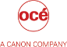

Welcome on Skima, my own place on the Network. This webpage is a presentation of my professional life.
Bienvenue sur Skima, mon espace dans le réseau. Cette page présente les grandes lignes de ma vie professionnelle.
After a well-diversified journey in IT software world, i now specialize in software architecture.
I rely on UML and my expertise in continuous integration system (Maven, CMake, Jenkins, Git, git-flow) to create Eclipse RCP products. I'm also dad of Basile!
Après un voyage bien diversifié dans le monde des nouvelles technologies, je me spécialise désormais dans l'architecture et la modélisation logicielle.
J'utilise actuellement UML et mon expertise en système d'intégration (Maven, CMake, Jenkins, Git, git-flow) pour fournir des produits logiciels basé sur Eclips RCP. Je suis aussi le papa de Basile!
Skills
Compétences
Work background
Expériences professionnelles
VP Engineering
Responsible of global architecture and development of our Platypus platform
Implementation of continuous delivery stream
Development of an UML implementation of the VIM, and development of an Eclipse RCP application to manipulate it
Responsable de l'architecture et du développement de notre plateforme Platypus
Mise en place du processus de livraison continue
Développement d'une implémentation UML du VIM, et d'une application Eclipse RCP pour la manipuler
OOA/D, OOP, Java, Eclipse RCP, UML, Jira, Git, Git-flow, Jenkins, CMake, Maven, Tycho
Sept. 2014 - NowWeb frontend developper
Développeur web
Développement web pour cible embarquée : migration de code existant (Ender.js) vers JQuery, portage des tests unitaires, validation du rendu HTML/CSS/JS
Migrate existing code from Ender.js bundle to JQuery. Port main code and test suite, ensure good graphical rendering (HTML/CSS/JS)
Javascript, HTML, CSS, JQuery, Backbone, Jasmine, Node, Git
12/2014 - 03/2015System developper
Développeur système
Modélisation et développement d'un framework de migration de système de gestion documentaire. Ce système est destiné à traiter de grandes quantités de données, le métier ciblé étant la gestion immobilière (contrats, comptabilité..).
Design and implementation of a migration framework for CMS systems
Big data, PHP, OOP, OOA/D
08/2014 - 12/2014Software architect and developer
Architecte et développeur logiciel
Soutien d'une équipe existante, apport de méthodologies et d'environnement de développement (intégration continue, gestion de livraison)
Définition d'architecture logicielle reposant sur UML, Eclipse 4 et EMF
Help migration from Matlab prototype to Java products ; reverse engineering, high level architecture, UML modeling, model transformation and code generation
Subversion, Trac, Java, Eclipse RCP, UML, OOA/D, OOP, EMF, JFace, Maven, tycho, Agile
 08/2013
-
08/2014
08/2013
-
08/2014
Research engineer / Eclipse RCP developer
Ingénieur de recherche / Développeur Eclipse RCP
Développement d'outils d'analyse d’exécution en vue d'optimiser la consommation énergétique de microcontroleurs
Développement de méthodes de conception et d'analyse basées sur les modèles : UML, IP-Xact et SysML en particulier
Develop analysis tools to calculate microcontroller power consumption from their various model
Development of various Eclipse plugins and features
C, SCXML, ARM, Eclipse RCP, UML, OOA/D, OOP, EMF, Maven, tycho, Java, Jenkins, IP-Xact, SysML
10/2012
-
08/2013
Frontend developer
Développeur Web
Architecture et implémentation d'une application en utilisant le Google Web Toolkit, et interfaçant des composants Schneider
Mise en place d'une ontologie spécifique et de ses outils d'exploitation
Architecture and development of a Google Web Toolkit driven frontend for an automated sensors network controller
GWT, OOP, Ontology, OWL, Maven, Drools, Agile, Java
07/2011 - 09/2012Mobile application developer
Développeur d'application mobile
Développement de l'application de recherche et vente de musique pour Orange, avec pour cible les terminaux Java (J2ME) et Android
Implementation of Orange's internal music service for mobile platform.
J2ME, Android, Agile, Java
03/2010 - 07/2011 03/2010 - 07/2011Backend developer
Développeur système
Maintenance et amélioration de la chaîne d'alimentation et d’agrégation des portails Média de Yahoo. Travail avec de nombreux partenaires et formats de données.
Multiple data source integration and aggregation into Yahoo's Media portals (news, finance, ..).
Perl, Big data, Agile
12/2007 - 03/2011Java/J2EE developer
Développeur Java/J2EE
Amélioration et développement d'applications temps-réel destinées aux opérateurs de la salle blanche.
Real-time applications development and maintenance used by clean rooms operators.
Java, J2EE, OOP
02/2007 - 11/2007 02/2007 - 11/2007Web application developer
Développeur d'application web
Architecture d'un framework PHP et développement d'un portail interne destiné a mettre en relation les salariés du groupe et les laboratoire, pour permettre des tests produit en interne.
End to end work for an internal web portal, aimed on relationship ease between search labs and employees, to allow easy and efficient internal product test. Reuse of the home-made framework on other projects.
PHP, HTML, CSS, OOA/D, OOP
03/2004 - 02/2007
XML/XSLT developer
Développeur XML/XSLT
Développement d'un outil permettant aux laboratoires de publier plus facilement le fruit de leurs recherches sur l'Intranet en utilisant des collections de ressources et une fiche de description XML.
Simple web publication tool development to ease search labs documentation publication and increase their visibility.
Perl, OOP, XML, XSLT
 03/2003 - 05/2003
Frontend developer
Développeur pour frontal web
- Maintenance et amélioration de la plateforme résidentielle d'accès a internet de Neuf. Implication de nombreux produits : web, annuaires, FTP, Radius, provisioning... dans un environnement de production ultra réactif. - Création d'outils de suivi de bug et de livraison - Encadrement d'équipes réduites (2 à 4 personnes)
Maintenance and evolution for SFR (former Neuf Telecom) ISP information system. Our team was responsible of whole backend and frontend for individuals internet access.
LDAP, PHP, Oracle, Perl
06/2001 - 02/2003
Ingénieur d'étude
Engineer
Missions internes
Internal missions
SSL, PKI, X509 Certificates, Java, OpenVPN
01/2001 - 06/2001